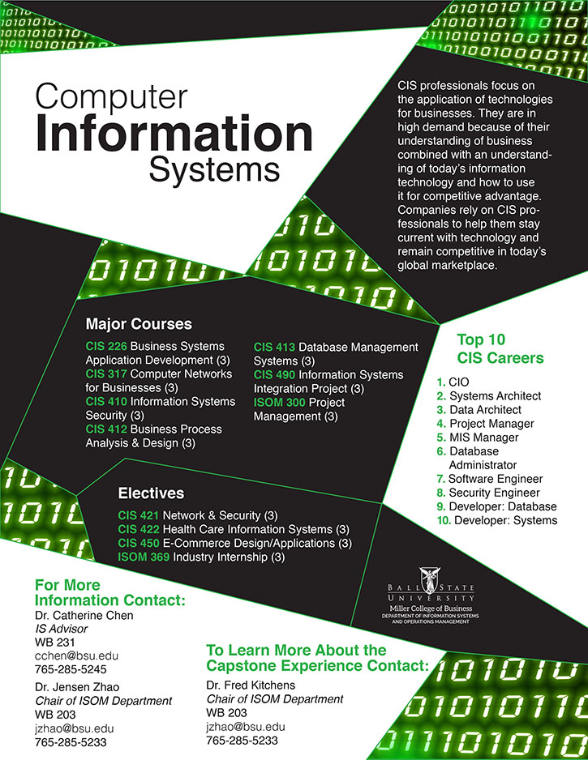
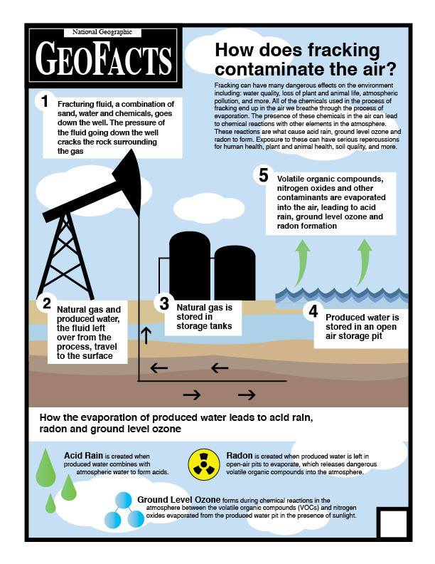

My Story
I'm Kaylie Woods, and I'm a visual storyteller. I tell stories through graphic and web design and photography.
I graduated from Ball State University cum laude in 2018 with a bachelor of arts in journalism graphics and a minor
in digital publishing. My passion for design, photography, and storytelling goes back to my years in middle school
and high school as a member of the yearbook staff, and ultimately, the copy editor my junior year, and editor-in-chief
my senior year. The many hours I spent designing pages, writing copy, taking pictures, and editing are what
lead me to pursue visual storytelling.
Design
AOTMP
I started at AOTMP on the marketing team in October 2018. I served as a "catch-all" in the marketing department,
completing a variety of tasks. The bulk of my responsibilites were design-related and included designing research
reports, marketing documents, social media graphics, and more.
View the full design here

View an excerpt of this design here.

View the full design here.
Ball State University Center for Business and Economic Research
In late August 2016, I started working as an undergraduate design assistant
for the Center for Business and Economic Research (CBER) Publications Team
at Ball State University. CBER conducts different research studies about
business and economics-related topics in the state of Indiana. All CBER
studies are posted on cberdata.org. The CBER publications team also puts
together pieces for other departments within the Miller College of Business
and clients within the community.
This is a poster advertisement for Miller 5K, a fundraising race that the Miller College of Business Dean's Office hosts.

This poster was designed for the Department of Information Systems and Operations Management in the Miller College of Business. The purpose is to advertise to students what computer information systems is, and what a major in it would look like at Ball State.
Pictured here is an infographic I made about the issues of small school corporations, featured in the study School Corporation Size and Student Performance.
Sweetwater Sound and the Sweet Family of Companies
I was a graphic design intern for Sweetwater Sound in the summer of 2016. During my time at Sweetwater, I worked on a variety of designs for both Sweetwater and the Sweet Family of Companies, which is the group of different companies that are owned by Sweetwater. I didn't just sit at a desk and design all day. Sweetwater's marketing department has its own print shop on site in which all print materials for all of the sweet companies are printed. I had the opportunity to work in the print shop and get hands-on experience bringing signage to life. I enjoyed getting this experience because printing is a major part of design and I know everything I learned in the print shop will aid me in the future.
I also had the opportunity to get behind a camera lens and shoot some pictures. Carl Verheyen, a talented musician who has worked on several movies and was in the band Supertramp, recorded a solo album entirely at Sweetwater Studios. I photographed the event in which the documentary of this recording experience was premiered to the public. I also took pictures of the bands in the first week of Rock Camp, Sweetwater's summer workshop for kids and teens in which they form a band and record and play music, and my last day at Sweetwater, I photographed the fifth week Rock Camp concert.

For a side project, I mocked up a redesign idea for the event page on Sweetwater's website. The design didn't make it to the web, but it gave me valuable experience with web design.
The summer interns had to collaborate on a group project. Our idea was to pitch a guitar pedal rental program. I decided to create this informational poster in order to explain the different types of pedals and what they do. Most of the interns were not guitarists so I thought it would be a good idea to create this. Additionally, I thought it would be a great way to visualize how this program would be branded.
This is a sign designed for the retail store that explains what a Fretlight is and how it works to the customer. The hope is to get the customer interested in the product and ask a sales engineer for a demo.
Ball State University Courses and Immersive Learning Projects
This is a collection of various projects I have completed for classes and for immersive learning projects. I have had the privilege to work on five different immersive learning projects during my time at Ball State.
This is a magazine spread design I created for my design I class. My idea was to have a dark, grunge feel to the design instead of the neon colors that are stereotypically tied to Cuba. The story was about the real lives of Cubans and how they deal with tragic issues daily so I felt like a dark, grunge feel was significantly more appropriate.
This is a magazine spread design I created for my design I class. My idea was to have a dark, grunge feel to the design instead of the neon colors that are stereotypically tied to Cuba because the story was about the real, tragic lives of Cubans.

This is an information graphic explaining how fracking contaminates the air. The graphic was designed as if it was going to be published in National Geographic as part of its GeoFacts series.
I was a member of an immersive learning class in which students designed and printed marketing as well as fundraising materials for nonprfit organizations. Pictured is an invite I designed for Little Red Door of East Central Indiana's annual benefit.